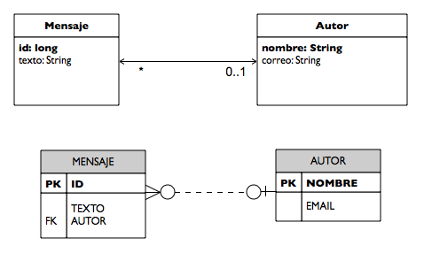

Introducción a JPA
Introducción a JPA
En esta primera sesión del módulo de Java Persistence API (JPA) vamos a ver una introducción a esta nueva tecnología Java que permite trabajar con entidades persistentes conectadas a una base de datos. Introduciremos los conceptos principales de JPA que iremos desarrollando en posteriores sesiones y proporcionaremos un ejemplo completo en el que describiremos la instalación básica de JPA utilizando Eclipse como entorno de desarrollo y Hibernate como implementación de JPA. Este ejemplo será la base de las prácticas de la sesión.
Entre los conceptos principales que trataremos sobre JPA destacamos los siguientes:
- uso de anotaciones para especificar propiedades
- entidades persistentes y relaciones entre entidades
- mapeado objeto-relacional
- gestión de contextos de persistencia y de transacciones
- diferencias entre JPA gestionado por la aplicación y gestionado por el contenedor
- lenguaje de queries
Estudiaremos estos conceptos en profundidad a lo largo del módulo. En la sesión de hoy realizaremos únicamente una introducción. Primero los explicaremos brevemente para después pasar a un ejemplo práctico en el que se podrán comprobar bastantes características de JPA.
Un poco de historia
El framework Hibernate, un conjunto de librerías que implementaba un mapeado ORM (Mapeado Objeto-Relacional), comenzó a ser desarrollado por Gavin King y un grupo de colaboradores a finales de 2001. Desde sus inicios se estableció como un proyecto Java open source. Pronto ganó popularidad y el grupo de desarrolladores fue contratado por JBoss, integrando el producto en el servidor de aplicaciones de la compañía. En la actualidad JBoss ha sido adquirido por RedHat, que ha incorporado su servidor de aplicaciones en algunas de sus distribuciones de Linux.
En paralelo al desarrollo y popularización de Hibernate, la especificación oficial de Java EE también intentaba definir entidades persistentes. En concreto, se definía en la arquitectura EJB (Enterprise JavaBeans) el uso de entity beans, objetos persistentes distribuidos gestionados por contenedores. Junto a los entity beans, Sun también apoyó la especificación de JDO (Java Data Objects), otro framework alternativo de gestión de entidades persistentes que no requiere el uso de contenedores EJB. Ninguno de los dos frameworks tuvo demasiado éxito. Los EJB de entidad siempre fueron denostados por ser muy poco eficientes y complejos de utilizar. JDO, por otra parte, tardó bastante en ser implementado de una forma robusta y sencilla de manejar.
En este contexto se crea en Mayo de 2003 el grupo de trabajo que definirá la siguiente (actual) especificación de EJB (EJB 3.0). En este grupo de trabajo pronto se tiene que adoptar un modelo para la gestión de entidades persistentes y se decide apostar por la solución que ya ha adoptado de hecho la comunidad: el enfoque basado en POJOs de Hibernate. Tras tres años de trabajo, en Abril de 2006 se realiza la votación que aprueba la nueva especificación. En declaraciones de Gavin King, la especificación de JPA recoge el 95% de las funcionalidades de Hibernate.
En la actualidad Hibernate ofrece una implementación de la especificación de JPA. Una de las diferencias fundamentales con las versiones clásicas de Hibernate es que éstas utilizan ficheros de configuración XML para definir el mapeado de las entidades con la base de datos. JPA (y su implementación Hibernate) recurre a anotaciones y a opciones por defecto para simplificar la configuración.
JPA
Java Persistence API (JPA) es la tecnología estándar de Java para gestionar entidades persistentes que se incluye en la última versión de Java EE (Java EE 5). La descripción oficial del estándar está definida en el JSR 220 en el que se especifica la arquitectura completa EJB 3.0. JPA es una parte del estándar EJB 3.0, aunque está especificado en un documento separado y autocontenido. Si quieres obtener una visión completa y detallada de lo que hace JPA, te será muy útil consultar este documento. Como la mayoría de los documentos que especifican las JSR, es un documento bastante legible, muy bien estructurado, muy conciso y con bastante ejemplos. Además, por ser la especificación original, es completo. Cualquier característica de JPA debe estar reflejada en este documento. Te aconsejo, por tanto, que lo tengas a mano, que le eches un vistazo inicial (después de haber leído los apuntes de este módulo, por supuesto) y que lo utilices como primera referencia ante cualquier duda.
La idea de trabajar con entidades persistentes ha estado presente en la Programación Orientada a Objetos desde sus comienzos. Este enfoque intenta aplicar las ideas de la POO a las bases de datos, de forma que las clases y los objetos de una aplicación puedan ser almacenados, modificados y buscados de forma eficiente en unidades de persistencia. Sin embargo, aunque desde comienzos de los 80 hubo aplicaciones que implementaban bases de datos orientadas a objetos de forma nativa, la idea nunca ha terminado de cuajar. La tecnología dominante en lo referente a bases de datos siempre han sido los sistemas de gestión de bases de datos relacionales (RDBMS). De ahí que la solución propuesta por muchas tecnologías para conseguir entidades persistentes haya sido realizar un mapeado del modelo de objetos al modelo relacional (ORM, Object-Relational Mapping en inglés). JPA es una de estas tecnologías.
Entidades persistentes
De la misma forma que en Programación Orientada a Objetos se trabaja con clases e instancias, en JPA se definen los conceptos de clase entidad (entity class) e instancia de una clase entidad a la que llamaremos instancia entidad (entity instance). Una clase entidad define un conjunto de atributos persistentes que van a compartir todas sus instancias. Por ejemplo, si estamos escribiendo una aplicación para una agencia de viajes será normal que usemos clases entidades como Hotel, Reserva o Vuelo. Las clases entidades se mapean directamente en tablas de la base de datos. Por otro lado, las instancias entidad son objetos concretos de la clase entidad (un hotel, o un vuelo) y en el mapeado relacional se corresponden con filas concretas de las tablas definidas por la clase entidad.
A diferencia del anterior estándar de persistencia en Java EE (EntityBeans en EJB 2.1), las entidades JPA son POJOs (Plain Old Java Object), objetos Java estándar que se crean con una llamada a new, que pueden ser pasados como parámetros y que tienen un conjunto de métodos con los que acceder a sus atributos.
Relaciones entre entidades y ORM
En JPA también es posible definir relaciones entre entidades, similares a las relaciones entre tablas en el modelo relacional. Así, una entidad puede estar relacionada con una o muchas otras entidades, definiendo relaciones uno-a-uno, uno-a-muchos o muchos-a-muchos. Estas relaciones se definen en JPA por medio de variables de instancia de las entidades y de métodos getters y setters que las actualizan. Por ejemplo, una propiedad de una entidad Reserva será el Vuelo sobre el que se ha hecho la reserva. Las instancias de Reserva tendrán asociadas instancias de Vuelo a las que podremos acceder fácilmente con un método como getVuelo. De esta forma, podremos obtener la(s) instancia(s) asociadas con una instancia dada llamando a un método de la entidad, sin tener que realizar ninguna consulta SQL. Esta es una de las ventajas fundamentales de JPA: es posible hacer de forma programativa (llamando a métodos definidos en las entidades) lo que en el modelo relacional sólo se puede hacer mediante consultas SQL.
Otra de las características principales de JPA frente a otros frameworks que realizan un ORM es su simplicidad. Hasta ahora otros frameworks (como Hibernate) han utilizado ficheros de configuración XML para especificar el mapeado entre clases Java y tablas de la BD relacional. Esto hacía complicado la definición y el mantenimiento de las entidades. La novedad de JPA en este sentido es la utilización de anotaciones, una importante característica de Java aportada en su release 5.0. Veremos que el uso de anotaciones simplifica bastante la definición de entidades y de sus relaciones.
Entity Manager y transacciones
El Entity Manager es el objeto de JPA que gestiona los contextos de persistencia y las transacciones. Una de las características más importantes de JPA es que no es invisible. Las entidades deben cargarse, borrarse, modificarse, etc. de forma activa por parte de la aplicación que está utilizando JPA (con la excepción, quizás, de las llamadas a los métodos set). Cuando una entidad se obtiene de la base de datos se guarda en una especie de caché en memoria que mantiene JPA. Esta caché se denomina contexto de persistencia, y se mantiene en el objeto EntityManager que utiliza la aplicación.
Es posible utilizar JPA en dos configuraciones. Por un lado puede ser usado en aplicaciones de escritorio implementadas en Java SE y en aplicaciones web sin utilizar ningún servidor de aplicaciones. En este caso, la gestión de la persistencia la realiza la aplicación Java y se habla de JPA gestionado por la aplicación (application-managed). En el segundo es el servidor de aplicaciones Java EE el que proporciona el entityManager y se dice que JPA está gestionado por el contenedor (container-managed).
Una diferencia fundamental entre ambas configuraciones es la gestión de las transacciones realizada por el Entity Manager. En el primer caso (persistencia gestionada por la aplicación) JPA implementa la gestión de transacciones utilizando el gestor de transacciones local del recurso con el que está trabajando, transacciones nativas definidas por el driver de JDBC. Las transacciones de este tipo son locales y no pueden participar en una conversación gestionada por una transacción de mayor ámbito. En el segundo caso (persistencia gestionada por el contenedor) se utiliza el API de gestión de transacciones JTA. Con él es posible utilizar transacciones extendidas y hacer que distintas transacciones elementales participen en una transacción común a todas ellas. Para trabajar con JPA gestionado por un contenedor necesitamos un servidor de aplicaciones que de soporte a la gestión de componentes Enterprise JavaBeans (EJB).
Implementaciones de JPA
JPA es un estándar que necesita ser implementado por desarrolladores o empresas. Al ser una especificación incluida en Java EE 5 cualquier servidor de aplicaciones compatible con Java EE debe proporcionar una implementación de este estándar. Por otro lado, dado que también es posible utilizar JPA en Java SE, existen bastantes implementaciones de JPA en forma de librerías Java (ficheros JAR) disponibles para incluir en aplicaciones de escritorio o aplicaciones web. La más popular es Hibernate, que también se incluye en el servidor de aplicaciones JBoss. Otras implementaciones gratuitas son Apache OpenJPA (incluida en el servidor de aplicaciones Jeronimo) y Oracle TopLink (incluida en el servidor de aplicaciones GlassFish de Sun). La única implementación comercial de JPA existente en la actualidad es CocoBase PURE POJO.
La implementación de Hibernate es la más popular del estándar. La gran aceptación de Hibernate en la comunidad de desarrolladores Java se refleja en que en la actualidad hay muchas empresas que utilizan Hibernate como capa de persistencia y no han dado todavía el salto a JPA. Es previsible que lo hagan próximamente.
Un ejemplo completo con Hibernate
Vamos a analizar los distintos elementos que componen una aplicación JPA con un ejemplo práctico. Vamos a centrarnos en una aplicación de escritorio desarrollada en Java SE. Más adelante veremos como se incorporan estos elementos en una aplicación web. El ejemplo que vamos a usar es muy sencillo, una aplicación que gestiona mensajes creados por autores. Se definen dos entidades: Autor y Mensaje así como una relación uno a muchos entre ellos. Un autor tiene asociado la lista de mensajes escritos. Queremos que sea una relación denominada padre-hijo, en la que el Autor sea el propietario de la relación. Si se elimina un autor de la base de datos, se deben eliminar los mensajes que ha escrito.
Comenzamos en esta sección listando los ficheros que vamos a utilizar y después comentaremos los elementos necesarios para configurar y ejecutar la aplicación en Eclipse. En el apartado siguiente analizaremos los conceptos más importantes de JPA basándonos en este ejemplo.
Fichero ayto/Autor.java:
package ayto;
import java.util.Collection;
import javax.persistence.*;
@Entity
public class Autor {
@Id
private String nombre;
private String correo;
@OneToMany(mappedBy = "autor", cascade=CascadeType.ALL)
private Set<Mensaje> mensajes = new HashSet<Mensaje>();
public Autor() { }
public String getNombre() { return nombre; }
public void setNombre(String nombre) { this.nombre = nombre; }
public String getCorreo() { return correo; }
public void setCorreo(String correo) { this.correo = correo; }
public Set<Mensaje> getMensajes() { return mensajes; }
public void setMensajes(Set<Mensaje> mensajes) {
this.mensajes = mensajes; }
}
El fichero Autor.java define la clase entidad Autor. La entidad tiene los atributos nombre (nombre del autor, debe ser único por ser el identificador de la entidad), correo (su dirección de correo electrónico) y mensajes. Los mensajes están precedidos con la anotación @OneToMany para indicar que el Autor tiene una relación uno-a-muchos con las entidades Mensaje (más adelante explicaremos la anotación mappedBy). La anotación cascade indica que las acciones de borrado, persist y merge se propagan en cascada a los mensajes hijos.
Fichero ayto/Mensaje.java
package ayto;
import javax.persistence.*;
@Entity
public class Mensaje {
@Id @GeneratedValue
private long id;
private String texto;
@ManyToOne
private Autor autor;
public Mensaje() { }
public long getId() { return id; }
public void setId(long id) { this.id = id; }
public String getTexto() { return texto; }
public void setTexto(String texto) { this.texto = texto; }
public Autor getAutor() { return autor; }
public void setAutor(Autor autor) { this.autor = autor; }
}
El fichero Mensaje.java define la clase entidad Mensaje. La entidad tiene los atributos id (identificador único del mensaje), texto (el texto del mensaje) y autor (el autor del mensaje, una instancia entidad de tipo Autor con la que se define la relación inversa a la definida en autor).
A continuación el fichero HolaMundo.java define el programa principal que usa las entidades anteriores. Se pide al usuario un mensaje y un nombre de autor, se busca el nombre de autor y si no existe se crea uno nuevo y se crea el nuevo mensaje asociado al autor indicado. Por último, se listan todos los mensajes asociados a ese autor.
Fichero ayto/HolaMundo.java
package ayto;
import java.io.BufferedReader;
import java.io.IOException;
import java.io.InputStreamReader;
import java.util.*;
import javax.persistence.*;
public class HolaMundo {
public static void main(String[] args) {
String mensStr;
String autorStr;
EntityManagerFactory emf = Persistence
.createEntityManagerFactory("simplejpa");
EntityManager em = emf.createEntityManager();
try {
BufferedReader in = new BufferedReader(
new InputStreamReader(System.in));
System.out.print("Nombre: ");
autorStr = in.readLine();
System.out.print("Mensaje: ");
mensStr = in.readLine();
} catch (IOException e) {
autorStr = "Error";
mensStr = "Error";
}
em.getTransaction().begin();
Autor autor = em.find(Autor.class, autorStr);
if (autor == null) {
autor = new Autor();
autor.setNombre(autorStr);
autor.setCorreo(autorStr + "@ua.es");
em.persist(autor);
}
Mensaje mensaje = new Mensaje();
mensaje.setTexto(mensStr);
mensaje.setFecha(new Date());
em.persist(mensaje);
mensaje.setAutor(autor);
Set<Mensaje> mensajes = autor.getMensajes();
mensajes.add(mensaje);
em.getTransaction().commit();
System.out.println(autor.getNombre() + " ha enviado "
+ mensajes.size() + " mensaje(s):");
Iterator<Mensaje> it = mensajes.iterator();
while (it.hasNext()) {
Mensaje mens = it.next();
System.out.println(mens.getTexto() + " - "
+ mens.getFecha().toString());
}
em.close();
emf.close();
}
}
Por último, el fichero persistence.xml es el fichero de configuración de JPA. En él se especifica el driver SQL que se utiliza, la URL de la conexión a la base de datos, el gestor de base de datos (MySQL) y se configura el pool de conexiones c3p0 implementado por Hibernate. Este fichero de configuración debe encontrarse en el directorio META-INF del classpath.
Al poner la propiedad hibernate.hbm2ddl.auto a update estamos indicando que Hibernate cree automáticamente las tablas necesarias para el mapeo de las entidades. Y la propiedad hibernate.show_sql hace que Hibernate muestre por la salida estándar las sentencias SQL que se lanzan al proveedor de base de datos.
Fichero META-INF/persistence.xml:
<persistence xmlns="http://java.sun.com/xml/ns/persistence"
xmlns:xsi="http://www.w3.org/2001/XMLSchema-instance"
xsi:schemaLocation="http://java.sun.com/xml/ns/persistence
http://java.sun.com/xml/ns/persistence/persistence_1_0.xsd"
version="1.0">
<persistence-unit name="simplejpa">
<properties>
<property name="hibernate.archive.autodetection"
value="class, hbm" />
<property name="hibernate.connection.driver_class"
value="com.mysql.jdbc.Driver" />
<property name="hibernate.connection.url"
value="jdbc:mysql://localhost:3306/jpa" />
<property name="hibernate.connection.username"
value="root" />
<property name="hibernate.connection.password"
value="root" />
<property name="hibernate.c3p0.min_size"
value="5" />
<property name="hibernate.c3p0.max_size"
value="20" />
<property name="hibernate.c3p0.timeout"
value="300" />
<property name="hibernate.c3p0.max_statements"
value="50" />
<property name="hibernate.c3p0.idle_test_period"
value="3000" />
<property name="hibernate.dialect"
value="org.hibernate.dialect.MySQL5Dialect" />
<property name="hibernate.hbm2ddl.auto"
value="update" />
<property name="hibernate.show_sql"
value="true"/>
<property name="hibernate.format_sql"
value="false"/>
</properties>
</persistence-unit>
</persistence>
Para poder ejecutar el ejemplo en Eclipse, debemos crear un proyecto, incluir en él las librerías de Hibernate JPA (disponibles en esta dirección) y configurar en Eclipse la siguiente estructura de directorios:

Hay que hacer notar que el directorio etc contiene los ficheros de configuración de la aplicación (META-INF/persistence.xml y log4j.properties) y que hay que configurarlo como una carpeta de fuentes (source folder) en el build path de Eclipse. De esta forma, Eclipse copia el contenido de esta carpeta al directorio bin en el que coloca los ficheros class ya compilados (directorio que no se muestra en la perspectiva Package Explorer) y están accesibles en la ejecución de la aplicación.
El directorio lib contiene todas las librerías de Hibernate JPA (no visibles porque se encuentran en el apartado Referenced Libraries).
Por completitud, a continuación listamos el fichero de configuración de Log4Java log4j.properties con el que se configuran los mensajes de log generados por Hibernate:
Fichero log4j.properties:
# Direct log messages to stdout
log4j.appender.stdout=org.apache.log4j.ConsoleAppender
log4j.appender.stdout.Target=System.out
log4j.appender.stdout.layout=org.apache.log4j.PatternLayout
log4j.appender.stdout.layout.ConversionPattern=%d{ABSOLUTE} %5p %c{1}:%L - %m%n
# Root logger option
log4j.rootLogger=WARN, stdout
# Hibernate logging options (INFO only shows startup messages)
#log4j.logger.org.hibernate=INFO
# Log JDBC bind parameter runtime arguments
#log4j.logger.org.hibernate.type=DEBUG
Para ejecutar la aplicación en Eclipse hay que lanzar la clase HolaMundo como una aplicación Java.
Anatomía de una aplicación JPA en Java SE
Terminamos la sesión explicando los elementos de JPA más importantes presentes en el ejemplo anterior. Más adelante profundizaremos en estos conceptos.
Entidades
En la aplicación se definen dos entidades: Mensaje y Autor. El siguiente código define la entidad Mensaje.
package ayto;
import java.util.Date;
import javax.persistence.*;
@Entity
public class Mensaje {
@Id @GeneratedValue
private long id;
private String texto;
private Date fecha;
@ManyToOne
private Autor autor;
public Mensaje() { }
public long getId() { return id; }
public void setId(long id) { this.id = id; }
public String getTexto() { return texto; }
public void setTexto(String texto) { this.texto = texto; }
public Autor getAutor() { return autor; }
public void setAutor(Autor autor) { this.autor = autor; }
public Date getFecha() { return fecha; }
public void setFecha(Date fecha) { this.fecha = fecha; }
}
Vemos que la entidad se define como un JavaBean: una clase Java con un conjunto de atributos privados con sus métodos de acceso (getters y setters) y con un constructor sin parámetros. La definición como entidad JPA se realiza con la anotación @Entity. Esta anotación hará que la clase se mapee automáticamente en una tabla en la base de datos definida por el gestor JPA. JPA también realiza automática la conversión de los atributos de la entidad a columnas de la tabla (aunque podríamos especificar con anotaciones los nombres de las columnas asociadas a cada atributo; lo veremos más adelante).
En el ejemplo definimos los siguientes atributos en la entidad Mensaje.
- Long id: identificador único que va a tener cada mensaje. Las instancias entidad deben ser únicas y debe existir algún atributo que las identifique de forma inequívoca. Este campo juega este papel. El hecho de definir el tipo del atributo como Long (una clase Java, en lugar del tipo primitivo long) permite que en la variable de instancia podamos guardar null (aunque no en este caso, porque estamos definiendo una clave primaria que no puede estar vacía). Vemos también en el código las anotaciones de JPA @Id y @GeneratedValue. La primera identifica este campo como el que define la identidad de las instancias e indica la clave primaria en la tabla generada por el mapeo entidad-relación (lo veremos más adelante). La segunda anotación indica que el valor del atributo se genera de forma automática cada vez que se crea una nueva instancia.
- String texto: texto del mensaje. Se trata de un atributo de tipo String.
- Date fecha: fecha de creación del mensaje. Se trata de un atributo de tipo java.util.Date que se mapea con una columna de la tabla SQL de tipo DATETIME. El tipo concreto de fecha SQL depende del gestor de base de datos que utilicemos (Mysql, Oracle, etc.); el gestor de persistencia de Hibernate es convierte el tipo Java al tipo SQL correspondiente.
- Autor autor: autor del mensaje. Con este atributo se está definiendo una relación con otra entidad, indicada por el tipo del atributo (un Autor). La anotación @ManyToOne especifica que existe una relación muchos-a-uno entre mensajes y autores (muchos mensajes pueden pertenecer al mismo autor).
La tabla generada en el mapeo entidad-relación es la siguiente (utilizando el gestor de base de datos MySQL):
CREATE TABLE Mensaje ( id bigint(20) NOT NULL auto_increment, texto varchar(255) default NULL, fecha datetime default NULL, autor_nombre varchar(255) default NULL, PRIMARY KEY (id), KEY FK9BDD22BF8FD5366D (autor_nombre), CONSTRAINT FK9BDD22BF8FD5366D FOREIGN KEY (autor_nombre) REFERENCES autor (nombre) ) ENGINE=InnoDB AUTO_INCREMENT=2 DEFAULT CHARSET=latin1;
La columna autor_nombre define una clave ajena a la otra tabla Autor definida en la aplicación.
Relaciones
En la aplicación ejemplo definimos una relación una-a-muchos bidireccional entre mensajes y autores. Un autor puede haber escrito muchos mensajes.
La relación es bidireccional porque podemos obtener el autor asociado a un mensaje en las instancias mensaje, y podemos obtener la colección de mensajes asociados a un autor en las instancias autor. Para ello en la entidad Mensaje definimos el método getAutor y en la entidad Autor definimos el método getMensajes que devuelve la colección de mensajes asociada al autor.
En las dos clases implicadas en la relación debemos marcar con anotaciones los atributos que intervienen en la misma. La entidad Mensaje es la propietaria de la relación y contiene la clave ajena a la entidad Autor. Esto lo indicamos con la anotación @ManyToOne que indica que muchos mensajes pueden pertenecer al mismo autor. El método setAutor asocia un mensaje con un autor. Hay que pasarle como parámetro una instancia entidad.
@Entity
public class Mensaje {
@Id
@GeneratedValue
private Long id;
private String texto;
@ManyToOne
private Autor autor;
...
public void setAutor(Autor autor) { this.autor = autor; }
public Autor getAutor() { return this.autor ; }
}
Por otro lado, en la entidad Autor declaramos el atributo mensajes de tipo Set<Mensaje> precedido por la anotación @OneToMany(mappedBy = "autor"). Lo inicializamos a un HashSet vacío, para indicar que no pueden haber elementos repetidos en la colección. De esta forma definimos la relación inversa a la anterior. El atributo mappedBy="autor" indica que la clave ajena en la entidad Mensaje es el campo autor. Se define también el método de acceso getMensajes que devuelve los mensajes asociados al autor. JPA transformará este método en una consulta SQL que realiza la búsqueda en la tabla de mensajes. Y se define el método de actualización setMensajes con el que inicializar la colección de mensajes.
@Entity
public class Autor {
@Id
private String nombre;
private String correo;
@OneToMany(mappedBy = "autor", cascade=CascadeType.ALL)
private Set<Mensaje> mensajes = new HashSet();
...
public Set<Mensaje> getMensajes() { return this.mensajes; }
public void setMensajes(Set<Mensaje> mensajes) { this.mensajes = mensajes}
}
Para añadir un nuevo mensaje a un autor hay que obtener su colección de mensajes y añadirle (con el método add de la colección) el nuevo mensaje.
Hay que hacer notar que en lo referido a la persistencia, el único campo que es importante (es el que se guarda en la base de datos) es el atributo autor de la entidad Mensaje. Bastaría con actualizar ese campo para que la relación en se actualizara en la base de datos. Sin embargo, en la aplicación debemos asegurarnos de que el mensaje también se añada en el campo del autor, para que la relación se mantenga correctamente en memoria. El siguiente fragmento de código de la aplicación es el que hace esta actualización:
mensaje.setAutor(autor); Set<Mensaje> mensajes = autor.getMensajes(); mensajes.add(mensaje);
Es exactamente el mismo código que escribiríamos si las entidades fueran objetos normales Java no persistentes.
La siguiente figura muestra la relación muchos-a-uno entre mensajes y autores y las tablas en las que se mapea. Notar que el elemento mappedBy definido en la entidad Autor es el que define la clave ajena en la entidad propietaria de la relación (el atributo autor en la entidad Mensaje).

Unidad de trabajo JPA
El elemento fundamental del framework JPA es la clase EntityManager. De forma similar a las conexiones JDBC, los objetos de esta clase son los encargados de gestionar la persistencia de las entidades declaradas en la aplicación. La unidad de trabajo habitual en JPA con Java SE consiste en: (1) crear un entity manager, (2) comenzar una transacción, (3) realizar operaciones sobre las entidades, (4) cerrar la transacción y (5) cerrar el entity manager. Todas las entidades que se crean en un entity manager son gestionadas por él y viven en su contexto de persistencia. Cuando el entity manager se cierra, las entidades siguen existiendo como objetos Java, pero a partir de ese momento se encuentran desconectadas (detached) de la base de datos.
Los cambios en las entidades no se propagan automáticamente a la base de datos. Es cuando se realiza un commit de la transacción cuando JPA chequea el contexto de persistencia, detecta los cambios que se han producido en las entidades, utiliza el proveedor de persistencia para generar las sentencias SQL asociadas a los cambios y vuelca (flush) esas sentencias en la base de datos.
A continuación copiamos un ejemplo de una unidad de trabajo JPA. En una aplicación es habitual hacer una unidad de trabajo completo en cada caso de uso. Hibernate define un pool de entity managers, de forma que su creación no sea costosa.
// (1) Creamos el Entity Manager
EntityManager em = emf.createEntityManager();
// (2) Creamos la transacción
em.getTransaction().begin();
// (3) Operaciones sobre las entidades
Autor autor = em.find(Autor.class, "ritchie");
Mensaje mensaje = new Mensaje("Hola mundo");
em.persist(mensaje);
mensaje.setAutor(autor);
autor.getMensajes().add(mensaje);
// (4) Cerramos la transaccion
em.getTransaction().commit();
// (5) Cerramos el Entity Manager
em.close();
Aplicación web ejemplo
Vamos a terminar convirtiendo el ejemplo en una aplicación web. Definimos el servlet AddMensaje que procesa una petición con los parámetros mensaje y autor. El servlet realiza la unidad de trabajo JPA de la misma forma que vimos en la aplicación de escritorio, obteniendo las entidades persistentes y añadiendo el mensaje y el autor. Una vez terminada la transacción y hechos persistentes los cambios, el servlet coloca la entidad Autor y la colección de entidades Mensaje en la petición y la redirige a la página JSP listaMensaje.jsp que es la encargada de mostrar el autor y su lista de mensajes.
El siguiente listado muestra el código del servlet AddMensaje.java:
Fichero AddMensaje.java:
package es.ua.jtech.jpa;
import java.io.*;
import java.util.Collection;
import javax.persistence.*;
import javax.servlet.*;
import javax.servlet.http.*;
public class AddMensaje extends HttpServlet {
private static final long serialVersionUID = 1L;
public void doGet(HttpServletRequest request,
HttpServletResponse response)
throws ServletException, IOException {
String mensStr =
request.getParameter("mensaje");
String autorStr =
request.getParameter("autor");
EntityManagerFactory emf = Persistence
.createEntityManagerFactory("simplejpa");
EntityManager em = emf.createEntityManager();
em.getTransaction().begin();
Autor autor = em.find(Autor.class, autorStr);
if (autor == null) {
autor = new Autor();
autor.setNombre(autorStr);
autor.setCorreo(autorStr+"@ua.es");
em.persist(autor);
}
Mensaje mensaje = new Mensaje(mensStr);
em.persist(mensaje);
mensaje.setAutor(autor);
Set<Mensaje> mensajes = autor.getMensajes();
mensajes.add(mensaje);
em.getTransaction().commit();
request.setAttribute("autor", autor);
request.setAttribute("mensajes", mensajes);
getServletContext().getRequestDispatcher("/listaMensajes.jsp")
.forward(request, response);
em.close();
emf.close();
}
}
La página inicial HTML en la que el usuario introduce el nombre del autor y el texto del mensaje es la siguiente:
Fichero index.html
<!DOCTYPE html PUBLIC "-//W3C//DTD HTML 4.01 Transitional//EN"
"http://www.w3.org/TR/html4/loose.dtd">
<html>
<head>
<meta http-equiv="Content-Type" content="text/html; charset=UTF-8">
<title>Añadir mensaje</title>
</head>
<body>
<form action="servlet/AddMensaje">
Mensaje: <input type="text" name="mensaje"> <br>
Autor: <input type="text" name="autor"><br>
<input type="submit" value="Enviar">
</form>
</body>
</html>
El siguiente código muestra la página JSP listaMensajes.jsp que muestra el autor y sus mensajes. Utiliza la librería de tags JSTL.
Fichero listaMensajes.jsp
<!DOCTYPE HTML PUBLIC "-//W3C//DTD HTML 4.01 Transitional//EN">
<%@ taglib uri="http://java.sun.com/jsp/jstl/core" prefix="c"%>
<html>
<head>
<title>Lista Mensajes</title>
</head>
<body>
<table>
<thead>
<tr>
<th>Autor</th>
<th>Mensaje</th>
</tr>
</thead>
<tbody>
<c:forEach items="${mensajes}" var="mens">
<tr>
<td><c:out value="${autor.nombre}"/></td>
<td><c:out value="${mens.texto}"/></td>
</tr>
</c:forEach>
</tbody>
</table>
</body>
</html>
Y, por último, la parte del fichero web.xml que mapea el servlet es la siguiente:
Fichero web.xml:
<servlet> <servlet-name>AddMensaje</servlet-name> <servlet-class>es.ua.jtech.jpa.AddMensaje</servlet-class> </servlet> <servlet-mapping> <servlet-name>AddMensaje</servlet-name> <url-pattern>/servlet/AddMensaje</url-pattern> </servlet-mapping>